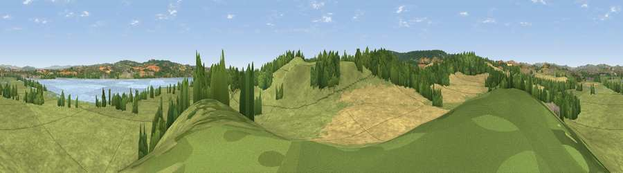

Viewpoint near Kenton
#21923 in England · top 44% of its area beats it · near KentonWhere it is
The exact computed spot (SX 95925 85225). Click the marker for map links.
The view, rendered

A 360° render of this exact spot computed from the terrain model, tree cover and land cover — summer colours, afternoon light, calibrated against photographs of famous viewpoints. Real trees, hedges and buildings will differ in detail.
The panorama
Grey silhouette: terrain skyline in each direction (720 bearings, Earth curvature and refraction included). Dashed green: skyline with trees (+15 m) and buildings (+8 m) as obstacles. Blue strip: how far the ground is visible on each bearing.
Where the view opens
Wedge length = distance to the farthest visible ground on that bearing (vegetation-aware). Rings at 10, 25 and 50 km.
What fills the view
59% grassland · 21% cropland · 11% woodland · 5% water · 3% built-up ·
Angular shares of the visible panorama (visual magnitude), not map area. Landscape diversity 0.52 (0–1 Shannon).
Key numbers
More beautiful places nearby
The staircase of upgrades: each row has a higher view potential than everything closer. Driving times are estimates from straight-line distance, calibrated against real road routing — check an actual route before setting out.
| Place | Direction | Drive | Score |
|---|---|---|---|
| Powderham Park | S · 1 km | ~3 min | 56.6 |
| Viewpoint near Kennford | WNW · 4 km | ~8 min | 61.4 |
| Viewpoint near Kennford | WNW · 4 km | ~10 min | 62.5 |
| Viewpoint near Kenn | WSW · 5 km | ~11 min | 80.0 |
| Viewpoint near Kenton | SW · 5 km | ~11 min | 80.7 |
| Viewpoint near Kenton | SW · 6 km | ~12 min | 82.9 |
| Viewpoint near Holcombe | SSW · 10 km | ~20 min | 83.3 |
| High Peak | E · 14 km | ~26 min | 85.3 |
50.65737, -3.47373 · source: screening · position refined by local search. Computed location — check access rights before visiting.